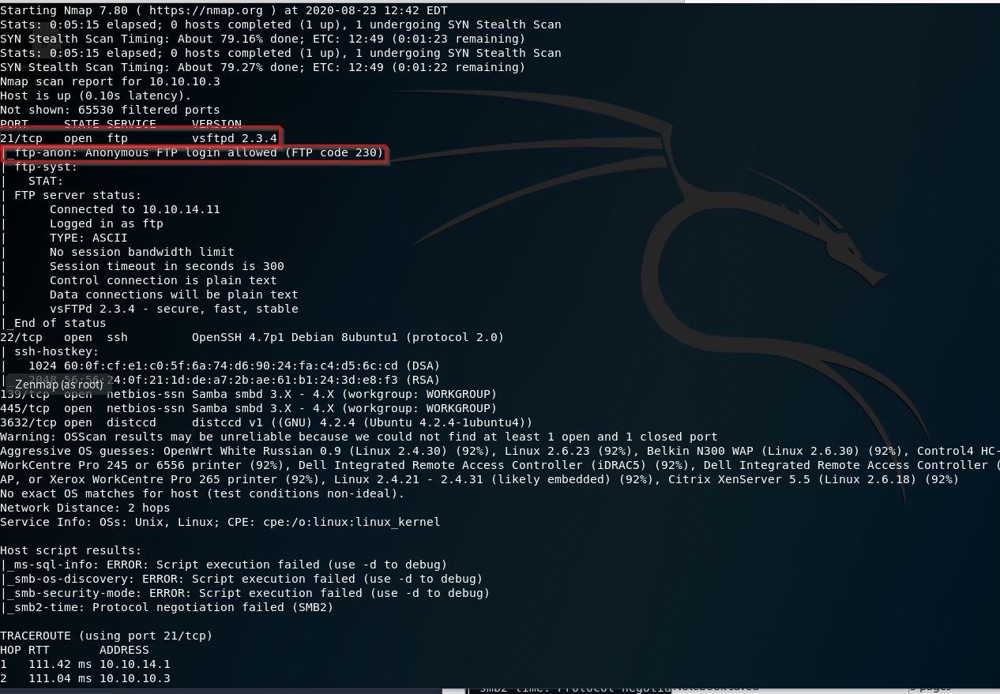

Firstly let's look at different nmap or scanning methodologies.
1) nmap 10.10.10.3 : this is the fastest way but there are fewer informations in it(only scan top 1000 ports). Then may be with it's results we just poke and pond around that look for any information or exploits etc.
2) first > nmap -T4 -p- 10.10.10.3
second > nmap -A -T4 -p<open ports from first>
3)nmap -A -T4 -p- 10.10.10.3
--------------------------------------------------------------------------------
21

anon login is may be a finding if we're doing pentest. If it 's internal side OK. Little bit more leniency on the internal side.
Twenty one by itself is not exploitable in the fact that you can put files and get files off of it. Versions might be exploitable. This version has buffer overflow vulnerability.
But by nature, typically, if we're looking at port twenty one and there's no version exploit. It's not really a vulnerability per say.
It's a vulnerability If you change somethings like anonymous FTP log in.
So let's say OK, we're logged in. Now we can put some files on the server. But the second part of that is how do we execute the files on the server? Now, we're not going to see that today because there is going to be no way to execute these. But think about that. If I put a file on the server, I need to either be able to execute it myself or I need to get somebody to execute it for me. So I have to do some sort of social engineering trick, somebody into opening a file or if the files maybe on a Web server, I can go in and I can open it myself and exploit it. I have to have some kind of command execution.
So putting a file onto a server, not malicious enough. We need a second part of that, typically, unless there's some sort of version exploit.
22
Heath Adams said that "Now, SSH can be exploitable ie in the wild and really an even CTF. I have never seen a version exploit for SSH."
Of course there are options like brute force attacks or gathering credentials and trying to log in that way. But of course we must check version exploits for ssh it doesn't mean that and trying to log in that way in SSH.
!! In a pentest we're going to do brute force attack anyway so there are 2 issue in it.
1) if we are able to log in with brute force then why is your(client) password policy bad?
2) if we are able to try brute force in noisy way and there is not a alert or something like that this is the issue about the client Security Information Management.
Heath Adams "I am very, very loud, very intentionally noisy pen tester. Now, that is completely different from the red team side where you're trying to be as quiet as possible. And my belief as a pen tester, if I am loud and you catch me great, I'll start getting quiter and quiter.
But if I'm being loud, you're not catching me. This helps me identify your weakest spots, which is your SIM(Security Information Management), which helps with the detection.So I will bang on the SSH door if I have to."
"a lot of times in these CTF machines, and I consider hackthebox as CTF when you see SSH like this you're going to gather credentials likely from some other aspect, some other exploit, some place you're going to find them, stumble upon them, and then you're going to use SSH to log in and get your lower shell. That happens quite frequently. In fact, a lot of the boxes that we're going to encounter are something like Port 20 to open and Port 80 open.
And that's all you got.
So,you have to probably exploit Port 80 to get into port 22 because Port 80 is way more chance."
-------------------------------SMB-------------------------------------
Let's start with SMB which is known as very vulnerable as we learned from previous sections.
!!!First things first we are checking smbclient.

ideally we would look $ADMIN in here but let's enumerate other sharenames.


maybe we can get admin credentials by enumerate these. let's try opt folder

we're in dead end.

we took smb version information from there. let's do some googling.

this is a metasploit module and there is same page on rapid7 about that. Let's get into that and see how we use it.

!!if we want to start metasploit more quickly we can type these commands.
systemctl postgresql enable
service postgresql start

so we're in.


we can find directories with this way.
Now to ease cracking password and generate a hash file for hashcat tool or other hash tools there is a way called unshadowing. now as we learned in /etc/passwd file there is x in where supposed to be the passwords but in /etc/shadow file there is hashs correspond the passwords. we'll take this hash and place in x where is in /etc/passwd folder. But for doing that we'll create two files to use these instead of genuine files.
!! this is a post exploitation actually.

lastly let's take a look at ftp i tried ftp version exploit but this didn't work so we'll access directly ftp seeing there is any useful information in it.

now we can upload a file but unless this is a web server we can't execute the file and because of that this is nonsense. But if is a web server which we can access and execute the files on our own then it is ok. In other scenario we can do some social engineering and trick a employee to open and execute the file.